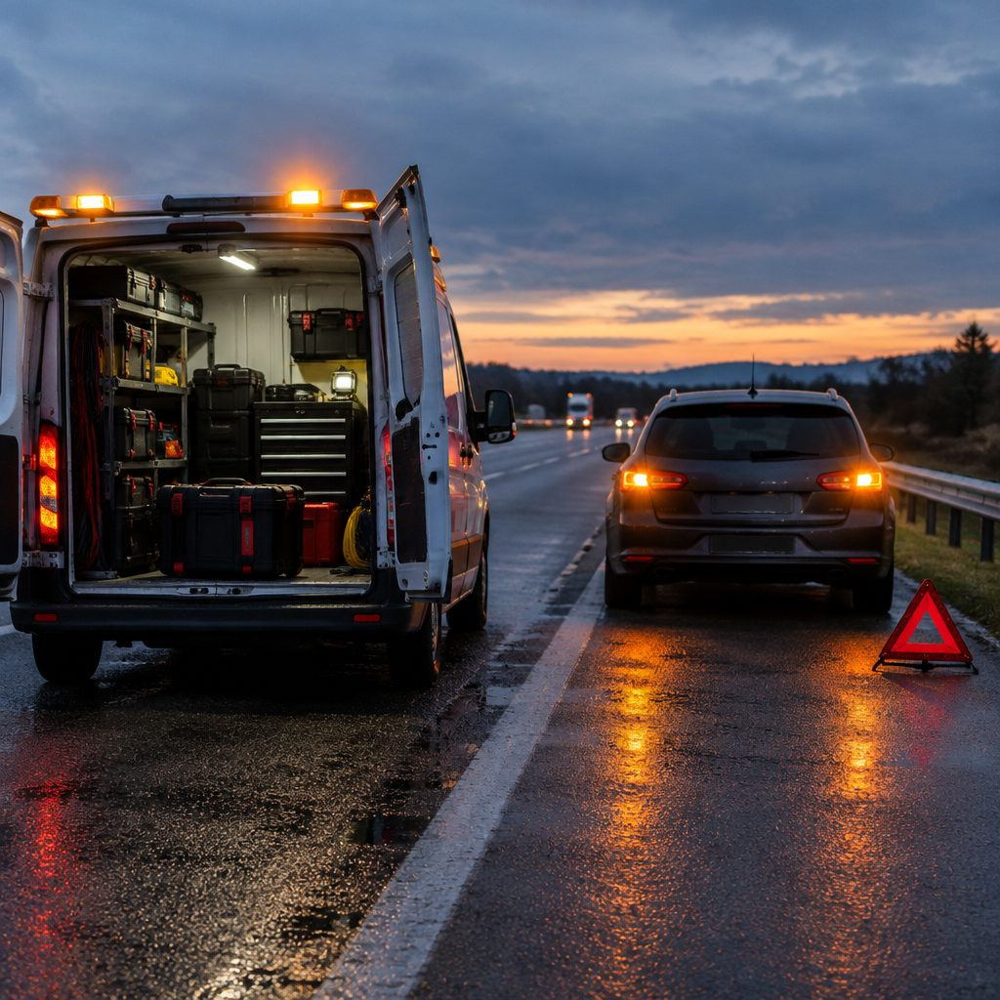

Не заводится
Проверяю питание, стартер, подачу топлива и ошибки. Часто машина заводится там же, где встала.

База в Мозыре. Приезжаю к машине туда, где она стоит: дом, гараж, стоянка, обочина, чужой город.
Половина поломок видна прямо на месте: ошибки, датчики, питание, топливо, подвеска. Для этого не нужен бокс — нужны оборудование и голова.
Проверяю питание, стартер, подачу топлива и ошибки. Часто машина заводится там же, где встала.
Читаю ошибки и говорю, можно ли ехать дальше или лучше не рисковать.
Выезжаю на место осмотра: смотрю машину до того, как вы отдадите деньги.
 Всё своё
Всё своё
Вам нужно только одно: чтобы машина была на месте и был доступ к ней.
Не обещаю сделать капитальный ремонт на обочине. Если нужен подъёмник, разборка или станок — скажу об этом сразу и предложу вариант: привезти машину в сервис или сделать часть работы на месте.
Назовите город, улицу и что случилось. Сразу скажу, когда смогу быть и сколько это будет стоить.
+375 (33) 360-95-61